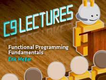

Series - C9 Lectures: Erik Meijer - Functional Programming Fundamentals
Series - C9 Lectures: Erik Meijer - Functional Programming Fundamentals
Welcome to a new technical series on Channel 9 folded into a different kind of 9 format: C9 Lectures. These are what you think they are, lectures. They are not conversational in nature (like most of w…
C9 Lectures: Dr. Erik Meijer - Functional Programming Fundamentals, Chapter 1 of 13 [2009/10/01]Welcome to a new technical series on Channel 9 folded into a different kind of 9 format: C9 Lectures. These are what you think they are, lectures. They are not conversational in nature (like most of w…
C9 Lectures: Dr. Erik Meijer - Functional Programming Fundamentals, Chapter 2 of 13 [2009/10/08]In Chapter 2, Dr. Meijer introduces Haskell syntax and notation (via a Haskell implementation called Hugs, to be precise, which is based on Haskell 98) and we learn about the Haskell syntax that repre…
C9 Lectures: Dr. Erik Meijer - Functional Programming Fundamentals, Chapter 3 of 13 [2009/10/15]
In Chapter 3, Dr. Meijer explores types and classes in Haskell. A type is a collection of related values and in Haskell every well-formed expression has a type. Using type inference, these types are a…
C9 Lectures: Dr. Erik Meijer - Functional Programming Fundamentals Chapter 4 of 13 [2009/10/23]In Chapter 4, Dr. Meijer teaches us about the art and practice of defining functions. Functions can be defined using conditional expressions and in Haskell conditional expressions must always have an …
C9 Lectures: Dr. Erik Meijer - Functional Programming Fundamentals Chapter 5 of 13 [2009/10/30]In Chapter 5, Dr. Meijer introduces and digs into List Comprehensions. In mathematics, comprehension notation is used to construct new sets from old sets. In Haskell, you can create new lists from old…
C9 Lectures: Dr. Erik Meijer - Functional Programming Fundamentals Chapter 6 of 13 [2009/11/05]
In Chapter 6, Dr. Meijer guides us through the world of recursive functions. In Haskell, functions can be defined in terms of themselves. Such functions are called recursive. For example: factorial 0…
C9 Lectures: Dr. Erik Meijer - Functional Programming Fundamentals Chapter 7 of 13 [2009/11/13]In Chapter 7, Dr. Meijer teaches us about Higher-Order Functions. A function is called higher-order if it takes a function as an argument and returns a function as a result:twice :: (a -> a) -&g…
C9 Lectures: Dr. Erik Meijer - Functional Programming Fundamentals Chapter 8 of 13 [2009/11/20]In Chapter 8, Functional Parsers, it's all about parsing and parsers. A parser is a program that analyses a piece of text to determine its syntactic structure. In a functional language such as Haskell…
C9 Lectures: Dr. Erik Meijer - Functional Programming Fundamentals Chapter 9 of 13 [2009/11/27]In Chapter 9, Interactive Programs, Dr. Meijer will teach us how to make programs in Haskell that are side-effecting:interactive. Haskell programs are pure mathematical functions with no side effects.…
C9 Lectures: Dr. Erik Meijer - Functional Programming Fundamentals Chapter 10 of 13 [2009/12/08]In Chapter 10, Declaring Types and Classes, Dr. Meijer teaches us about type declarations, data declarations, arithmetic expressions, etc. In Haskell, a new name for an existing type can be defined u…
C9 Lectures: Dr. Graham Hutton - Functional Programming Fundamentals Chapter 11 of 13 [2009/12/11]Yes. You read the title correctly! For today's lecture in the Functional Programming Fundamentals series of lectures the great Dr. Graham Hutton, author of the Programming in Haskell book that Dr. Eri…
C9 Lectures: Dr. Erik Meijer - Functional Programming Fundamentals Chapter 12 of 13 [2009/12/18]In Chapter 12, Lazy Evaluation, Dr. Meijer takes us on a journey into the world of order of evaluation (when expressions are evaluated). In the case of lazy evaluation, computation is delayed until th…
C9 Lectures: Dr. Erik Meijer - Functional Programming Fundamentals Chapter 13 of 13 [2009/12/25]Well, my friends, the day has arrived. For thirteen weeks, you have been provided all the conceptual tools to take the leap into the deep end of the functional programming pool and float safely. The g…